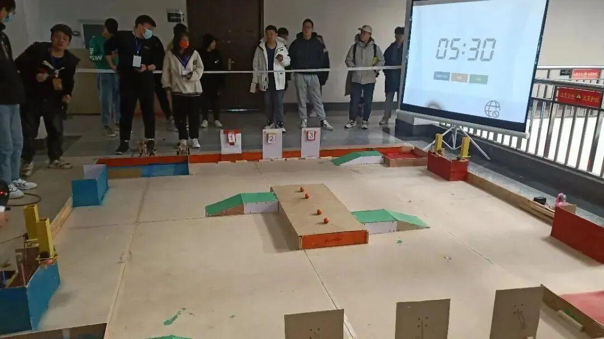
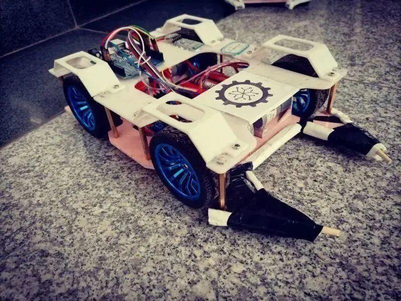
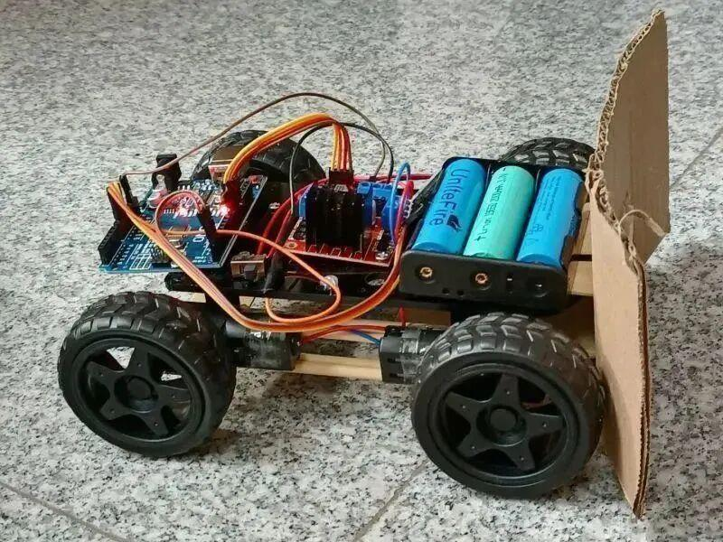
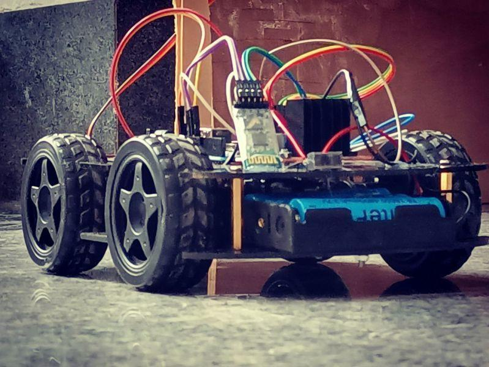
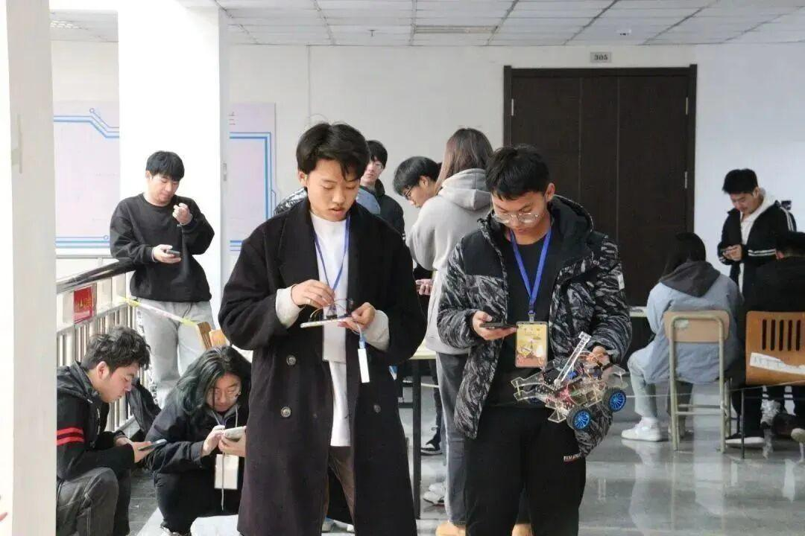
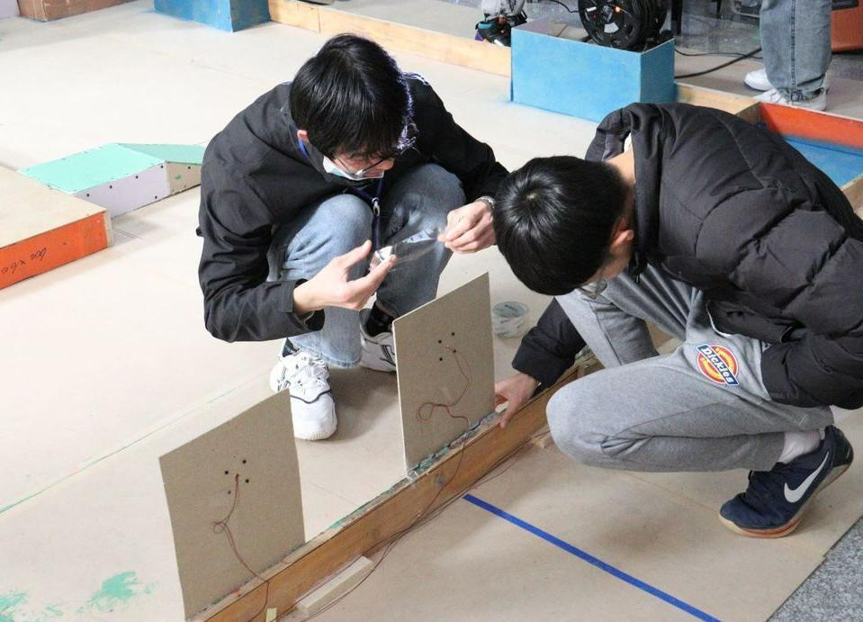
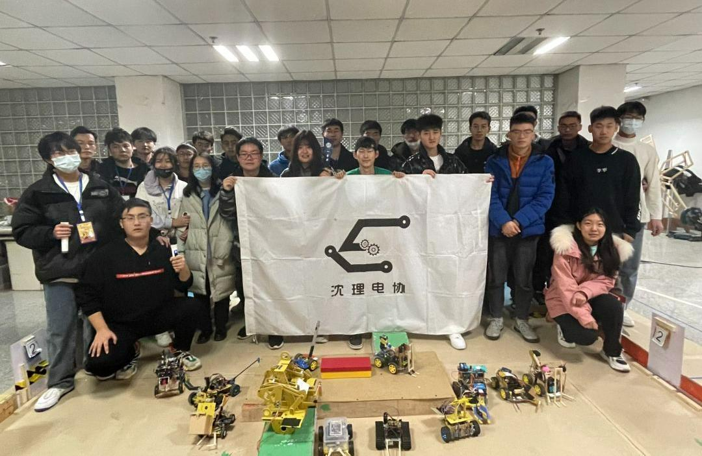
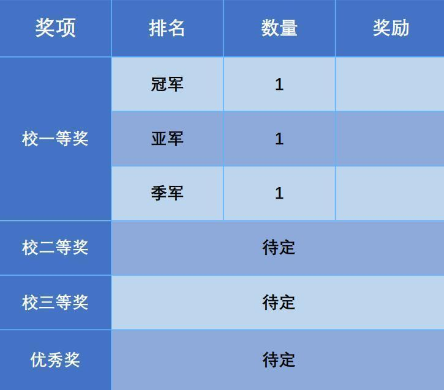

第八届理工杯机器人大赛
一年一度的理工杯机器人大赛来啦！
你想要体验激烈对抗、团队合作吗？
理工杯提供了这样的平台
这里不仅有机器人的对抗
还有众多参赛选手的满腔热情
第八届理工杯机器人大赛正式开启
超越极限，超越自我！







MineralMaster2022（以下简称MIM2022）比赛核心是以团队对抗形式进行机器人之间的半自动或全自动对抗。参赛队伍需要根据规则要求独立自主设计出至多三台至少一台机器人，通过机器人完成特定行为对场中的目标球（高尔夫球）进行控制，使目标球进入不同位置的球框或者球门，获得不同程度的得分，同时在规定场地内完成规则允许的增益机制，进攻及防守行为。最后以双方进球的累加进行累计积分。积分多者判定为比赛胜利方。比赛除基础的进球得分外，有额外的机关触发增益，获取更多得分，以增强整个比赛的策略性和趣味性，同时对参赛者的机械结构设计提出了一定的要求

本届机器人大赛主题为“机械球赛”，是我校的第八届机器人大赛，场地及规则设定充满趣味性和策略性，使比赛更易于在广大学生中产生兴趣点。本次比赛旨在提高我校学生的动手能力、机械 能力、编程能力以及思维能力，有利于提高我校学生综合素质，战术思维。现已经成为我校的传统比赛。由于比赛具有创新性、趣味性、技术性、策略性，是我校学生每年一次智慧与动手能力的展示，是激发我校创新创业氛围的一个重要契机，更是让同学们从手机游戏中脱离出来，边玩边学专业知识的良好机会。亦可推动同学间的学术交流，带动我校的科研氛围


报名时间：2022年11月11日-22日
比赛时间：2022年11月26日-27日
收表邮箱：2038413712@qq.com
比赛QQ群：670524805或扫描下面的二维码
参赛人员需于2022年11月22日21：00前，下载参赛通知群里群文件中的报名表并将报名表提交至邮箱。报名名单将于报名工作结束后的第一个工作日内上传参赛通知群。并对报名成功的队伍进行短信通知。如有工作失误造成的信息有误，请于公布信息的三日内联系电协人事部干事，进行更正。
文字 | 恩嘉
排版 | 恩嘉
审核 | 李现亮